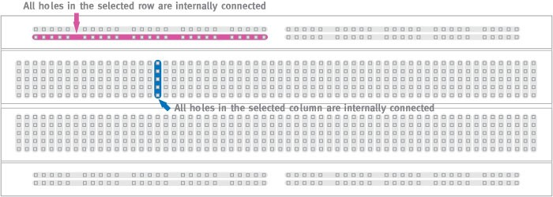
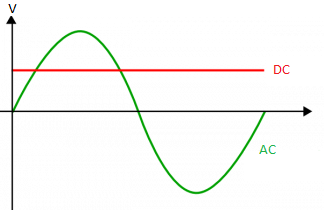
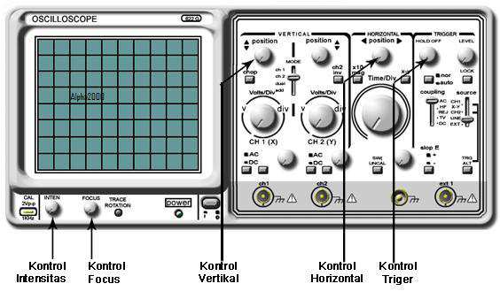
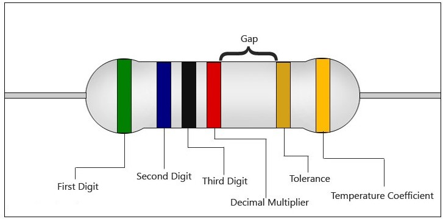

Sebelum melakukan percobaan, ada beberapa dasar-dasar keselamatan yang harus diperhatikan oleh praktikan. Dalam menyambungkan terminal, kabel power disambungkan ke alat terlebih dahulu baru setelah itu menyambungkan kabel ke terminal power. Usahakan tangan tidak dalam keadaan basah saat memasuki laboratorium elektronika.
Breadboard adalah papan yang digunakan untuk merangkai rangkaian elektronika tanpa harus menggunakan solder. Komponen elektronika yang digunakan dapat dipasang-cabut pada lubang breadboard. Tiap lobang terhubung satu sama lain dengan pola tertentu seperti pada gambar 1. Lobang yang berada pada sisi atas dan bawah tersambung secara horizontal dan terpisah di tengah. Lobang yang berada di tengah breadboard tersambung secara per kolom.
Gambar 1. Sambungan pada breadboardArus listrik mengalir dengan dua cara: Alternating Current (AC) dan Direct Current (DC). Pada arus AC, nilai tegangan selalu berubah dari positif ke negatif dan sebaliknya dengan periode tertentu. Arus yang keluar dari terminal power merupakan arus AC. Pada arus DC, nilai tegangan dan arus selalu konstan. Arus DC diproduksi oleh alat yang dapat mengkonversi arus AC dari terminal menjadi arus DC atau dari baterai. Mayoritas perangkat elektronik membutuhkan arus DC untuk bekerja.
Gambar 2. Perbedaan arus AC dan DCMultimeter merupakan instrumen yang digunakan untuk mengukur besaran elektronika, seperti tegangan, hambatan, dan kuat arus. Beberapa multimeter juga dapat mengukur kapasitansi, induktansi, atau uji dioda dan transistor. Berdasarkan cara pembacaan data, multimeter terbagi menjadi dua jenis: analog dan digital. Multimeter analog menampilkan data menggunakan jarum pada skala sedangkan multimeter digital menampilkan data dalam bentuk angka diskrit. Hal yang perlu diperhatikan sebelum melakukan pengukuran adalah letak pemasangan probe dan mode (jenis dan rentang besaran yang akan diukur). Kesalahan pada kedua hal ini dapat menyebabkan kerusakan pada multimeter.
Signal generator merupakan perangkat elektronika yang berfungsi untuk menghasilkan beberapa bentuk sinyal AC dengan besar amplitudo dan nilai frekuensi yang dapat diatur. Beberapa bagian penting yang ada pada signal generator:
| No | Bagian SG | Fungsi |
|---|---|---|
| 1 | Saklar daya (power switch) | Menyalakan SG |
| 2 | Terminal output | Tempat memasangkan probe output |
| 3 | Amplitudo | Pengaturan nilai amplitudo yang dihasilkan |
| 4 | Frequency | Pengaturan nilai frekuensi yang dihasilkan |
| 5 | Waveform | Memilih bentuk gelombang yang dihasilkan |
Untuk mengatur nilai frekeuensi yang dihasilkan, digunakan dua buah panel. Panel pertama berbentuk pemutar dengan skala 10 hingga 100 dan panel kedua berupa tombol yang menentukan faktor pengali dimulai dari 1 hingga 10.000. Nilai frekuensi yang dihasilkan pada signal generator ini dalam satuan Hz (getaran per detik).
Osiloskop merupakan alat yang mampu menampilkan bentuk sinyal tegangan terhadap waktu, berbeda dengan multimeter yang hanya menampilkan nilai tegangan.
Gambar 6. Osiloskop analog Goodwill seri 622GBagian-bagian penting pada osiloskop:
| No | Bagian Osiloskop | Fungsi |
|---|---|---|
| 1 | Channel 1 | Tempat memasukkan probe untuk mengukur data sinyal atau tegangan. |
| 2 | Channel 2 | Tempat memasukkan probe untuk mengukur data sinyal atau tegangan. Kedua channel dapat digunakan terpisah atau bersamaan |
| 3 | Position X | Mengatur posisi citra sinyal di layar pada arah sumbu X. |
| 4 | Position Y | PMengatur posisi citra sinyal di layar pada arah sumbu Y. |
| 5 | Volt/Div | Mengatur skala (faktor pengali) dari tegangan yang akan diwakilkan oleh satu satuan persegi pada layar. Skala tegangan dinyatakan secara vertikal. |
| 6 | Time/Div | Mengatur skala (faktor pengali) dari waktu yang akan diwakilkan oleh satu satuan persegi pada layar. Skala waktu dinyatakan secara horizontal. |
| 7 | Source | Menentukan channel pengukuran yang akan ditampilkan pada layar. |
| 8 | Inten | Mengatur tingkat kecerahan (intensitas cahaya) pada layar. |
| 9 | Focus | Mengatur tingkat ketajaman dari citra sinyal yang ditampilkan pada layar untuk memperoleh gambar yang lebih jelas. |
| 10 | Ground | Menampilkan posisi ground (tegangan nol) pada channel yang digunakan pada layar. Dimanfaatkan sebagai kalibrator. |
| 11 | Level | Menghentikan gerak dari citra sinyal pada layar osiliskop. |
Layar osiloskop tampak seperti gambar 7. Nilai satu satuan persegi (division) pada layar osiloskop bergantung pada pengaturan nilai Volt/div dan time/div. Sebagai contoh ketika osiloskop diatur pada posisi 1 Volt/div dan 1m time/div, maka satu kotak pada arah sumbu y menyatakan nilai 1 Volt dan satu kotak pada arah sumbu x menyatakan nilai 1 milisekon atau 0,001 sekon. Bila didapati citra sinyal dengan amplitudo setinggi 2 kotak dan satu perioda dari citra tersebut adalah sepanjang 5 kotak kita dapat segera mengetahui sinyal tersebut memiliki nilai tegangan peak-to-peak sebesar 4 Volt dan perioda senilai 5 ms, atau dengan kata lain sinyal tersebut memiliki frekuensi 200 Hz. Untuk membandingkan dua atau lebih sinyal masukan baik secara bersamaan maupun tidak harus menggunakan skala yang sama, khususnya untuk skala sumbu y atau Volt/div. Hal lain yang perlu diperhatikan adalah pada bagian kiri bawah dari layar terdapat suatu male port berupa lempengan logam kecil dengan lubang bagian tengahnya yang diberi label CAL 2Vp-p (lihat gambar 6). Bagian ini digunakan sebagai kalibrator utama ketika osiloskop hendak digunakan pertama kali. Cara mengkalibrasikan osiloskop pertama kali adalah sebagai berikut
Resistor (hambatan) berfungsi untuk mengatur arus listrik yang mengalir pada sebuah komponen. Resistor memiliki nilai resistansi yang dinyatakan dengan satuan ohm (Ω). Nilai resistansi pada setiap resistor direpresentasikan oleh pita warna pada tiap resistor.
Gambar 8. Resistor Kode warna transistor
Kode warna transistor
Tiap resistor mempunyai jumlah pita warna yang berbeda, dari 4 hingga 6 buah. Tiap resistor yang mempunyai jumlah berbeda juga memiliki pembacaan pita yang berbeda.
Rangkaian Thevenin merupakan metode untuk menyederhanakan rangkaian elektronika secara teoretis-matematis. Penyederhanaan Thevenin mengubah rangkaian elektronika yang kompleks menjadi rangkaian yang terdiri dari sebuah sumber tegangan dan resistor yang dipasang seri terhadap sumber tegangan. Sebagai contoh, langkah-langkah untuk membuat rangkaian Thevenin dari rangkaian pembagi tegangan pada gambar 9: